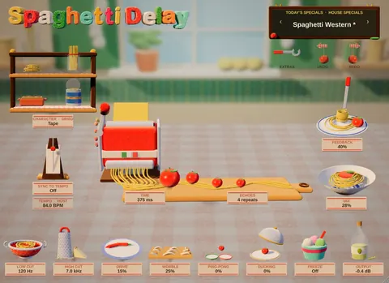

Lo-fi plugins, toasted to taste
Lo-fi is mostly four things: tape warmth, a little pitch wobble, less top end, and echoes that sound older than the song. These are the plugins we reach for when a track is too clean for its own good.
Black Friday: all 16 plugins for $29 with the Full Fridge (was $50), until 1 December. See the deals
A simple lo-fi chain: put the tape machine first for warmth and wobble, filter off the shiny top, add a little crunch on the drums, and finish with a dark echo. Keep every move small. Lo-fi falls apart when one effect does all the work.
Go gently and compare with the effect off now and then. The best lo-fi still sounds like a good recording underneath.
What to reach for
- Burnt Toast Tape Machine (tape saturation). The heart of the sound. Tape saturation with wow and flutter, and the toast browns as you push it.
- Noodle Filter (filter). Roll off the top end, or let the built-in movement open and close it slowly.
- Orange Crusher (distortion). Crush and tape pulp for drums that sound sampled off an old record.
- Spaghetti Delay (delay). Tape, analog and lo-fi echoes with wobble and drive.
- Milkshake Chorus (chorus). A slow, thick chorus on keys and guitars for that warped-cassette lean.
- Muesli Granular (granular). Scatter a phrase into grains for dusty textures behind the beat.
 Burnt Toast Tape MachineTape saturation plugin
Burnt Toast Tape MachineTape saturation plugin Noodle FilterFilter plugin
Noodle FilterFilter plugin Orange CrusherDistortion and saturation plugin
Orange CrusherDistortion and saturation plugin
Spaghetti DelayDelay plugin Milkshake ChorusChorus plugin
Milkshake ChorusChorus plugin Muesli GranularGranular effect plugin
Muesli GranularGranular effect plugin
Get all 16 in the Full FridgeTry them free first
Recipes to try
Questions
What plugins do I need for a lo-fi sound?
A tape plugin for warmth and wobble, a filter to soften the top end, some saturation for the drums and a dark delay. Burnt Toast Tape Machine, Noodle Filter, Orange Crusher and Spaghetti Delay cover all four.
Do these work for lo-fi hip hop in FL Studio and Ableton Live?
Yes. They are VST3 on Windows and AU, VST3 and AAX on Mac, so they load in FL Studio, Ableton Live, Logic Pro, Pro Tools and other DAWs.
Can I try them before buying?
Yes. Every plugin has a 3-day free trial, and Butter Spread, our stereo widener, comes with a free licence.
More menus
VocalsDrumsMasteringBeginnersCreative effectsHip hop and trapFL StudioLogic ProAbleton LivePro Tools